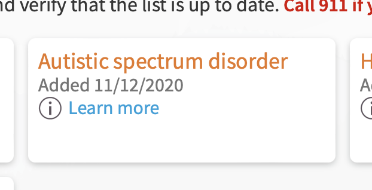

March 2022
This is a more complete version of a comment I left on Hacker News. I recommend reading the subject article by C.L. Lynch, "Autism is a Spectrum" Doesn't Mean What You Think.
I have autism. If you know me, that might surprise you. I appear neurotypical. I have a career, a marriage, and a social life. I like playing video games and fighting climate change. I don't need support from others on a daily basis.
And yet my psychologist, a 30-year clinical psychologist and behavioral health department director, wrote it right there on my medical chart:
Autism spectrum disorder
Behind the scenes, there's a "me" hardly anyone sees. It's the me that you can paralyze with a text message, whose entire day is ruined if I brush my teeth after showering instead of before, and whose arm feels on fire if you lightly draw little circles on it with your finger. It's the me that was mute for nine years.
Of folks with autism, I'm not an outlier. In fact, 2% of all human beings have autism [1]. You've met several of them without realizing it. Is that a surprise to you?
We've all heard "autism is a spectrum". But that word, "spectrum", in that context, has had its meaning lost to time. A spectrum is not a scale. This is how to actually think about the autism spectrum:
There is no "more" or "less"; no "high" or "low". There is only "different".
When a person with autism "comes out", some of the most popular responses are things like "I don't believe you", "Are you sure?", or "You don't seem autistic". People believe autism looks like X so strongly that if they don't see X, they won't even believe a professional diagnosis.
Why not? And what is X?
Autism is a grab bag of symptoms, and not all people with autism are dealt the same hand. One possible symptom is
Deficits in developing, maintaining, and understand [sic] relationships, ranging, for example, from difficulties adjusting behavior to suit various social contexts; to difficulties in sharing imaginative play or in making friends; to absence of interest in peers.
DSM-5
Pay special attention to that first example, which I'll paraphrase as "inability to change behavior based on social feedback". We'll come back to that in a bit.
One symptom I got dealt in my autism hand is a hearing hypersensitivity. As cool as it sounds, this is no superpower. My body's defense systems will sometimes malfunction and incorrectly believe everything is far too loud.
During one of these bouts, all the neurological safety mechanisms of an air horn being blown point-blank down the ear canal activate in response to things as quiet as a book page turning. First I become startled and flinch easily (particularly if the noises start and stop), and after some time I became irritable, unable to think, and therefore unable to carry on conversation. Just, you know, the all-around feeling of "losing it".
Imagine going to the grocery store and at any given moment dozens of people are point-blank blowing air horns into your ears, of random pitches, randomly starting and stopping. Maybe you'll understand me when I say that as a kid I would sometimes collapse to the grocery store floor and roll around screaming with my hands against my ears, begging to go home.
But! I'm one of the lucky ones. I didn't get dealt the "inability to change behavior based on social feedback" symptom. So when other people in the grocery store look at me like I'm losing it (reminder: I am) I can log that detail away, and try a little harder to keep it in next time. I've gone through several stages over 30+ years:
My actions are more socially acceptable now, but the sensation is the same. Inside, I'm still that kid rolling on the floor screaming. The only difference is that I have learned to fake not being him.
Unfortunately, people dealt the "inability to change behavior based on social feedback" card get stuck on the rolling-on-the-floor-screaming phase. This, perhaps, is what the world thinks autism "looks like".
People who can't act like they're not in pain often need more support because our world is not built for them. It is not built to educate them or accomodate them or understand them. But they are not any more "low-functioning" than I am "high-functioning". Those words are descriptions of how observers experience autism, not how autism-havers do. That's why these terms have fallen out of use since the DSM-5.
In the autism community we call the ability to fake not having autism masking. Those of us who can do it, do it ~every day.
Masking a hearing hypersensitivity is just one example. Autism can come with any sensory hypersensitivity, and several other symptoms. For many of them, you can find great masking advice in online communities.
Other symptoms people may mask are:
Masking comes with its own set of issues [2], particularly that it's enourmously exhausting; it's as if power-hungry problem-solving brainpower is being used to emulate what many would just call "social common sense". For me personally, this means less brainpower to actually problem solve—I am literally dumber when I am with others.
Many people with autism agree that the best part of the day is the first moment alone when you can finally "unmask". But for all its downsides, masking is a great tool and being able to use it is a blessing.
I didn't find out I had autism until I was 30 years old. It explained so much about my life. The diagnosis served as a starting point for personal research, led me to a community of autism "study buddies", and has landed me on some meds that help with the worst parts. My relationships and personal happiness have dramatically improved. I can't help but wonder how many people through history have gone through the same needless troubles without resolution because of how disincentivized they were from expressing their unfiltered neurodivergence.
Of all human beings, 2% have autism. Many more are neurodivergent in other ways. Encourage yourself and others to feel comfortable talking with family, friends, and doctors about ways you might feel different from others. It's a hard thing, to know if your brain is doing something different from other people's brains—to try to reach a conclusion with a sample size of 1 and no control.
If someone talks to you about ways they feel atypical, be open to the idea that they might be onto something, instead of dismissing it as a character weakness to be overcome.
In the end, the best thing I got out of it was just knowing what was different.
